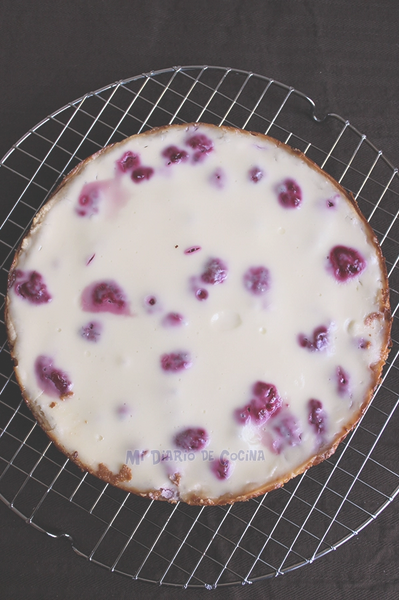

Déjalo reposar por 25 min, mientras prepara la mesa
Así se ve cuando lo sacas del horno

Recuerda usar el hashtag #oncechilena y etiquetarnos en redes sociales, te esperamos
Nota:No encontré un video del kuchen pero aquí va una inspiración para tu pastel de frutos rojos